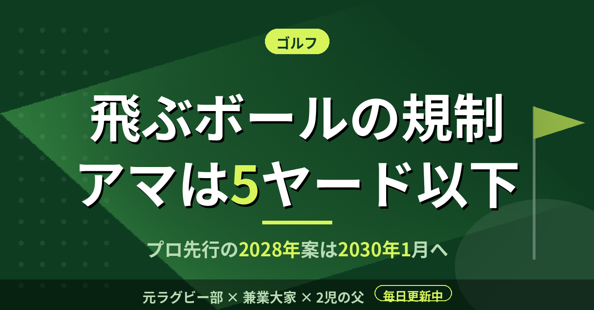

ゴルフ飛ぶボールの規制、アマは5ヤード以下。月1回以上回る僕が2030年の線を読んだ
社会人になってからゴルフを本格的に始め、シーズン中は月2〜3回ラウンドしている。取引先と回る日は、ティーショットの飛距離がその日の話題になりやすい。その飛距離に、ルールを作る側が上限をかけ直そうとしている。
317ヤードの線は変えず、試す条件を変える
R&AとUSGAは2023年12月、ゴルフボールの飛距離基準を見直すと発表した。ボールの検査には「標準総合距離（ODS）」という上限があり、317ヤード（許容差3ヤード）を超えて飛ぶボールは公認されない。発表で変わったのは、この317ヤードという数字ではなく、試し打ちの条件だった。
ヘッドスピードを時速120マイルから125マイルへ、打ち出し角を10度から11度へ、スピン量を毎分2,520回転から2,220回転へ。より速く、より飛びやすい条件で打っても317ヤードに収まるボールしか認めない、という変え方である。発表時の見込みでは、飛ばし屋のプロで最大13〜15ヤード、ツアーの平均的な男子で9〜11ヤード、ほとんどのアマチュアで5ヤード以下、飛距離が落ちるとされた。
プロ先行の2028年案は、2030年1月へ
当初の予定は2段階だった。プロなどのエリート層は2028年1月から、一般のゴルファーは2030年1月から新しい基準に移る。ところが2026年6月17日、R&AとUSGAは共同声明を出し、ODSの試験方法は2030年1月まで変えないとした。日本ゴルフ協会（JGA）も日本語版を公開している。
理由として挙げられたのは、業界の多くが2段階より2030年への一本化を支持したこと、そしてツアー側との協議で、エリート層の飛距離にもっと効く別の方法を検討する方針になったことだ。プロだけが先に飛ばないボールに替わる年は、少なくとも今の時点では来ないことになった。
アマの平均は8年で0.1ヤード
では、アマチュアの飛距離はどれだけ伸びてきたのか。ショット計測のArccos社が2025年の約1,000万本のドライバーショットを集計した報告では、男性アマの平均は224.1ヤードだった。2018年は224.0ヤードで、8年で0.1ヤードしか変わっていない。
同じ報告で、ハンディキャップ5未満の層は約244ヤード、30以上の層は約181ヤード。腕前による差は60ヤードを超える。道具は毎年新しくなるのに、アマの平均はほとんど動いていない。伸び続けているのはプロの側で、規制の狙いもそこにある。
発注側のラウンドで5ヤードは誤差
僕が回るのは、取引先の業者や会社の同僚、学生時代の友人との組が多い。仕事柄、客側として回る日も多いが、そこで5ヤード落ちて困る場面は思い浮かばない。60ヤードある腕前の差に比べれば、5ヤードは誤差に近い。
むしろ気になるのは、上の層で起きる変化のほうだ。ラグビーでも、競技規則が変わるとまずトップの試合で戦い方が変わり、それが少し遅れて学生の試合に降りてくる。ゴルフで言えば、プロの試合で2打目に長いクラブを持つ場面が増えるかどうか。2030年に向けて見ておくのは、自分の飛距離より、そこだと思っている。
規制が始まるまで、あと3年余り。それまでに僕が買うボールは、いまの基準で作られたものになる。
この記事は note にも掲載しています。